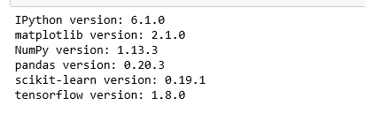
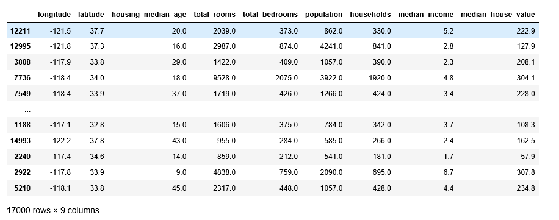
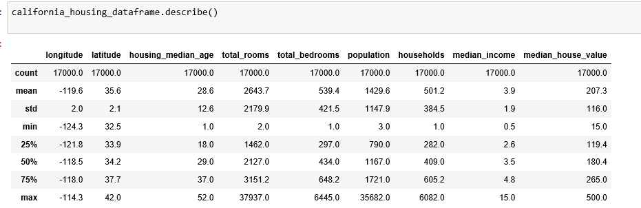
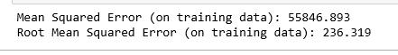
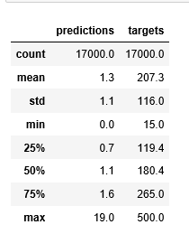
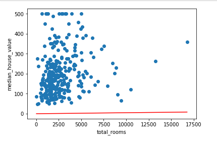

使用 TensorFlow 的基本步骤
学习目标：
- 学习基本的 TensorFlow 概念
- 在 TensorFlow 中使用 LinearRegressor 类并基于单个输入特征预测各城市街区的房屋价值中位数
- 使用均方根误差 (RMSE) 评估模型预测的准确率
- 通过调整模型的超参数提高模型准确率
数据基于加利福尼亚州 1990 年的人口普查数据。
1. 设置
首先我们要import相应的库，做一些准备工作。
1 | import math |
这是我的配置：

接下来我们就添加数据集。用到pands的read_csv函数。
1 | california_housing_dataframe = pd.read_csv("https://storage.googleapis.com/mledu-datasets/california_housing_train.csv", sep=",") |
我们将对数据进行随机化处理，以确保不会出现任何病态排序结果（可能会损害随机梯度下降法的效果）。此外，我们会将 median_house_value 调整为以千为单位，这样，模型就能够以常用范围内的学习速率较为轻松地学习这些数据。1
2
3california_housing_dataframe = california_housing_dataframe.reindex(np.random.permutation(california_housing_dataframe.index))
california_housing_dataframe["median_house_value"] /= 1000.0
california_housing_dataframe

2. 检查数据
建议在使用之前，先观察一下数据，在上面那个步骤的最后一句话应该会输出数据的前几位和后几位，大概能了解数据的字段名。但是还有一个更实用的函数describe()可以输出数据的统计信息快速摘要：样本数、均值、标准偏差、最大值、最小值和各种分位数。
1 | california_housing_dataframe.describe() |

显示数据的统计摘要
3. 构建第一个模型
我们将尝试预测 median_house_value，它将是我们的标签（有时也称为目标）。我们将使用 total_rooms 作为输入特征。
第 1 步：定义特征并配置特征列
为了将我们的训练数据导入 TensorFlow，我们需要指定每个特征包含的数据类型。我们主要会使用以下两类数据：
分类数据：一种文字数据。在本练习中，我们的住房数据集不包含任何分类特征，但您可能会看到的示例包括家居风格以及房地产广告词。
数值数据：一种数字（整数或浮点数）数据以及您希望视为数字的数据。有时您可能会希望将数值数据（例如邮政编码）视为分类数据（我们将在稍后的部分对此进行详细说明）。
在 TensorFlow 中，我们使用一种称为“特征列”的结构来表示特征的数据类型。特征列仅存储对特征数据的描述；不包含特征数据本身。 一开始，我们只使用一个数值输入特征 total_rooms。以下代码会从 california_housing_dataframe 中提取 total_rooms 数据，并使用 numeric_column 定义特征列，这样会将其数据指定为数值：
1 | # Define the input feature: total_rooms. |
第 2 步：定义目标
接下来，我们将定义目标，也就是 median_house_value。同样，我们可以从 california_housing_dataframe 中提取它：
1 | # Define the label. |
第 3 步：配置 LinearRegressor
接下来，我们将使用 LinearRegressor 配置线性回归模型，并使用 GradientDescentOptimizer（它会实现小批量随机梯度下降法 (SGD)）训练该模型。learning_rate 参数可控制梯度步长的大小。
1 | # Use gradient descent as the optimizer for training the model. |
第 4 步：定义输入函数
模型配置完，目标与特征也选完了，把数据导入到LinearRegressor去，我们需要定义一个输入函数让它告诉 TensorFlow 如何对数据进行预处理，以及在模型训练期间如何批处理、随机处理和重复数据。 首先，我们将 Pandas 特征数据转换成 NumPy 数组字典。然后，我们可以使用 TensorFlow Dataset API 根据我们的数据构建 Dataset 对象，并将数据拆分成大小为 batch_size 的多批数据，以按照指定周期数 (num_epochs) 进行重复。
注意：如果将默认值 num_epochs=None 传递到 repeat()，输入数据会无限期重复。
然后，如果 shuffle 设置为 True，则我们会对数据进行随机处理，以便数据在训练期间以随机方式传递到模型。buffer_size 参数会指定 shuffle 将从中随机抽样的数据集的大小。 最后，输入函数会为该数据集构建一个迭代器，并向 LinearRegressor 返回下一批数据。
1 | def my_input_fn(features, targets, batch_size=1, shuffle=True, num_epochs=None): |
第 5 步：训练模型
现在，我们可以在 linear_regressor 上调用 train() 来训练模型。我们会将 my_input_fn 封装在 lambda 中，以便可以将 my_feature 和 target 作为参数传入,我们可以先训练100步。
1 | linear_regressor.train( |
第 6 步：评估模型
我们基于该训练数据做一次预测，看看我们的模型在训练期间与这些数据的拟合情况。 注意：训练误差可以衡量您的模型与训练数据的拟合情况，但并不能衡量模型泛化到新数据的效果。
1 | # Create an input function for predictions. |

然后我们看一下预测跟目标函数的统计摘要：
1 | calibration_data = pd.DataFrame() |

我们也可以根据模型绘制出散点图：
1 | sample = california_housing_dataframe.sample(n=300) |

这条初始线看起来与目标相差很大。看看您能否回想起摘要统计信息，并看到其中蕴含的相同信息。 然后重新设置之前的参数，继续训练，看能否找到更好的结果。
综上所述，这些初始健全性检查提示我们也许可以找到更好的线。